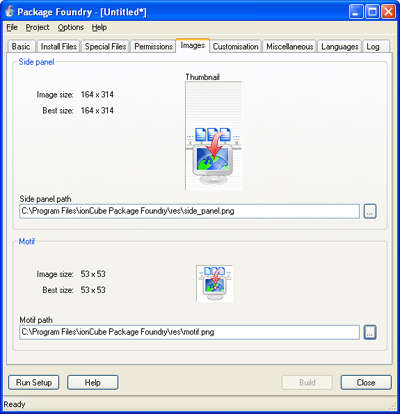

5.5. Custom Images
Custom images can be assigned on the Images tab:

If custom images are required, specify their paths in the side panel and motif fields. Images can be any dimensions, but will look best if the side panel image is 164x314 pixels, and the motif is 53x53 pixels. The images must have file extension .png, .jpeg, .jpg, .bmp, or .gif, and be a valid image of the corresponding image format.
Copyright 2002-2005 ionCube Ltd. All rights reserved.